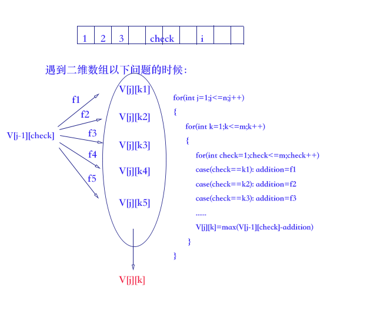
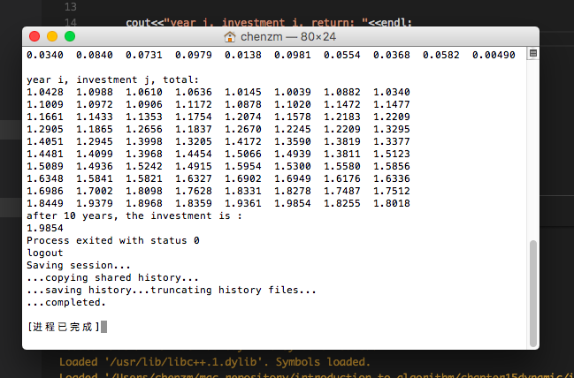

你所掌握的算法知识帮助你从Acme计算机公司获得了一份令人兴奋的工作，签约奖金为1万美元。你决定利用这笔钱进行投资，目标是10年后获取最大回报。你决定请Amalgamated投资公司管理你的投资，该公司投资回报规则如下：
该公司提供n种不同的投资，从1～n编号。在第j年，第i种投资的回报率为rij。换句话说，如果你在第j年在第i种投资中投入d美元，那么你在第j年年底，你会得到drij美元。回报率是有保证的，即未来10年每种投资的回报率均为已知。
你每年只能做出一次的投资决定。在每年的年底，你既可以将钱投入到上一年的投资种类中，也可以转移到其他的投资中。如果跨年时候你不做投资转移，需要支付f1的费用，否则，需要支付f2的投资费用。
f2>f1
算法设计与分析

可以看出，投资策略规划问题具有最优子结构。如图所示，红色部分的V[j][k]是从V[j][k1] V[j][k2] V[j][k3] V[j][k4] V[j][k5]中选择出最大的值。
能量守恒观点分析
V[j−1][check]具有的总能量为total
total经过f1 f2 f3 f4 f5不同的路径的流动，最后流动到V[j][k]，必然存在一条流量最大的路径。
这可以用反证法，假设fi不是流量最大的那个，那必然可以用fj这条流量更大的路径来代替它。
如果Amalgamated公司在上述规则上又加入了新的限制条款，在任何时候单一的投资种类不得超过15000元，那么该问题就失去了最优子结构性质。
举个例子：
假设最优子结构是通过f3这个流量来获取的。但是对f3执行限流，有约束条件，则这条f3路径就“走不通”了，自然取不到最优解。
investment_program.h
1
2
3
4
5
6
7
8
9
10
11
12
13
14
15
16
17
18
19
20
21
22
23
24
25
26
27
28
29
30
31
32
33
34
35
36
37
38
39
40
41
42
43
44
45
46
47
48
49
50
51
52
53
54
55
56
57
58
59
60
61
62
63
64
65
|
using namespace std;
void best_investment(double **r)
{
double increase[n+1][m+1]; //二维数组increase[i][j]表示第i年购买第j种投资
double f1=0.01,f2=0.04;
double addition;
for(int i=1;i<=m;i++)
{
increase[1][i]=r[i][1]+1.0;
//第一年为初始状态，最大值就是本年每一种投资的值
}
for(int j=2;j<=n;j++) //表示第j年
{
for(int k=1;k<=m;k++) //表示第k种投资
{
increase[j][k]=-0x7fffffff;
//从第一种投资开始检查，看看是否有和k相等类型的投资？
//类似的问题可以这样解决：两个for循环，然后从第一种投资一次开始检查
//第二种投资类型，只有几种状态：A B C等等。依次检查，看看addition值属于哪种类型
for(int check=1;check<=m;check++)
{
if(check==k)
addition=f1;
else
addition=f2;
if((increase[j-1][check]-addition)*(1.0+r[k][j])>increase[j][k])
{
//r[k][j]第j年第k种投资
increase[j][k]=(increase[j-1][check]-addition)*(1.0+r[k][j]);
}
}
}
}
cout<<"year i, investment j, total: "<<endl;
for(int i=1;i<=n;i++)
{
for(int j=1;j<=m;j++)
{
cout<<setprecision(5)<<showpoint<<increase[i][j]<<"\t";
}
cout<<endl;
}
cout<<"after 10 years, the investment is :"<<endl;
double total_10=-0x7fffffff;
for(int k=1;k<=m;k++) //表示第k种投资
{
if(increase[n][k]>total_10)
total_10=increase[n][k];
}
cout<<total_10<<endl;
}
|
investment_program.cpp
1
2
3
4
5
6
7
8
9
10
11
12
13
14
15
16
17
18
19
20
21
22
23
24
25
26
27
28
29
30
31
32
33
34
|
int main()
{
srand( (unsigned)time(NULL));
double **r;
r=new double*[m+1];
for(int i=0;i<=m;i++)
{
r[i]=new double[n+1];
}
cout<<"year j, investment i, return: "<<endl;
for(int i=1;i<=m;i++) //共有i种投资类型
{
for(int j=1;j<=n;j++) //年份从j=1到n，共n年
{
r[i][j]=(((rand()%1000+1)/1000.0+1)-1)/10.0;
cout<<setprecision(3)<<showpoint<<r[i][j]<<"\t";
}
cout<<endl;
}
cout<<endl;
best_investment(r);
for(int i=0;i<=m;i++)
{
delete[] r[i];
}
delete[] r;
return 0;
}
|
算法实现结果

 微信
微信 支付宝
支付宝